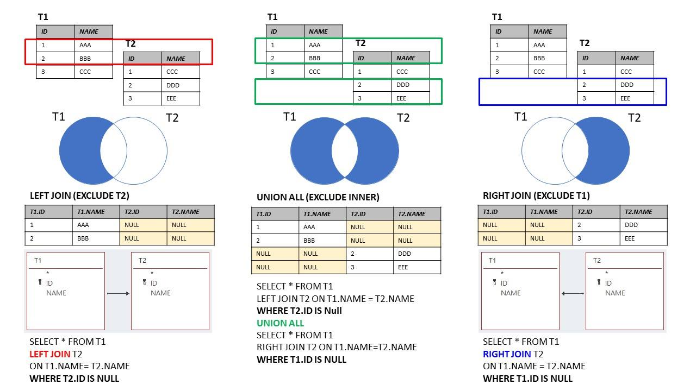

18 Join()-ing data
author: Юрій Клебан
Before start load packages
18.1 Join types
Lets check join operations as set opretations

Joins on table are look like this:



Source: https://marcus116.blogspot.com/2019/07/cheatsheets-sql-join-cheat-sheets.html
18.2 Join functions
To solve previous problem you can use set of join()-functions. left_join() can solve our previous example:
d2002 <- gapminder %>%
filter(year == 2002) %>% # year
group_by(continent, year) %>% # grouping condition
summarise(
lifeExpAvg = mean(lifeExp),
countriesCount = n(), # n() count of rows in group
.groups = 'drop'
)
d2002 |> head()| continent | year | lifeExpAvg | countriesCount |
|---|---|---|---|
| <fct> | <int> | <dbl> | <int> |
| Africa | 2002 | 53.32523 | 52 |
| Americas | 2002 | 72.42204 | 25 |
| Asia | 2002 | 69.23388 | 33 |
| Europe | 2002 | 76.70060 | 30 |
| Oceania | 2002 | 79.74000 | 2 |
grouped_data2002pop <- gapminder %>%
filter(year == 2002) %>% # year
group_by(continent) %>% # grouping condition
summarise(totalPop = sum(pop),
year = min(year))
grouped_data2002pop |> head()| continent | totalPop | year |
|---|---|---|
| <fct> | <dbl> | <int> |
| Africa | 833723916 | 2002 |
| Americas | 849772762 | 2002 |
| Asia | 3601802203 | 2002 |
| Europe | 578223869 | 2002 |
| Oceania | 23454829 | 2002 |
grouped_data2002pop <- grouped_data2002pop %>%
arrange(totalPop)
grouped_data <- d2002 %>%
left_join(grouped_data2002pop, by = "continent")
grouped_data
# but we have duplicated year| continent | year.x | lifeExpAvg | countriesCount | totalPop | year.y |
|---|---|---|---|---|---|
| <fct> | <int> | <dbl> | <int> | <dbl> | <int> |
| Africa | 2002 | 53.32523 | 52 | 833723916 | 2002 |
| Americas | 2002 | 72.42204 | 25 | 849772762 | 2002 |
| Asia | 2002 | 69.23388 | 33 | 3601802203 | 2002 |
| Europe | 2002 | 76.70060 | 30 | 578223869 | 2002 |
| Oceania | 2002 | 79.74000 | 2 | 23454829 | 2002 |
grouped_data2002pop <- grouped_data2002pop %>%
arrange(totalPop)
grouped_data <- d2002 %>%
left_join(grouped_data2002pop, by = c("continent", "year"))
grouped_data
#ok| continent | year | lifeExpAvg | countriesCount | totalPop |
|---|---|---|---|---|
| <fct> | <int> | <dbl> | <int> | <dbl> |
| Africa | 2002 | 53.32523 | 52 | 833723916 |
| Americas | 2002 | 72.42204 | 25 | 849772762 |
| Asia | 2002 | 69.23388 | 33 | 3601802203 |
| Europe | 2002 | 76.70060 | 30 | 578223869 |
| Oceania | 2002 | 79.74000 | 2 | 23454829 |
Let’s make a different data sets for testing join() fucntions:
first_df <- data.frame(Letter = c("A", "B", "C", "D", "E"),
Value = c(1:5))
second_df <- data.frame(Letter = c("A", "B", "C", "D", "F"),
Value = c(12, 7, 4, 1, 5))
first_df
second_df | Letter | Value |
|---|---|
| <chr> | <int> |
| A | 1 |
| B | 2 |
| C | 3 |
| D | 4 |
| E | 5 |
| Letter | Value |
|---|---|
| <chr> | <dbl> |
| A | 12 |
| B | 7 |
| C | 4 |
| D | 1 |
| F | 5 |
You can see that the last row Letter is different in dataframes. left_join() test is next.
first_df %>%
left_join(second_df, by = "Letter")
# there is no F letter, becouse first_db joined only known first_df Letters.| Letter | Value.x | Value.y |
|---|---|---|
| <chr> | <int> | <dbl> |
| A | 1 | 12 |
| B | 2 | 7 |
| C | 3 | 4 |
| D | 4 | 1 |
| E | 5 | NA |
first_df %>%
right_join(second_df, by = "Letter")
# right_join! there is no E letter, becouse first_db joined only known second_df Letters.| Letter | Value.x | Value.y |
|---|---|---|
| <chr> | <int> | <dbl> |
| A | 1 | 12 |
| B | 2 | 7 |
| C | 3 | 4 |
| D | 4 | 1 |
| F | NA | 5 |
first_df %>%
inner_join(second_df, by = "Letter")
# inner_join! there is no E and F Letters,
# only known both first_df and second_df are left here.| Letter | Value.x | Value.y |
|---|---|---|
| <chr> | <int> | <dbl> |
| A | 1 | 12 |
| B | 2 | 7 |
| C | 3 | 4 |
| D | 4 | 1 |
first_df %>%
full_join(second_df, by = "Letter")
# all are here, but unknown values replaced by NA, it's ok.| Letter | Value.x | Value.y |
|---|---|---|
| <chr> | <int> | <dbl> |
| A | 1 | 12 |
| B | 2 | 7 |
| C | 3 | 4 |
| D | 4 | 1 |
| E | 5 | NA |
| F | NA | 5 |
Short description of reviewed functions:
| Function | Objectives | Arguments | Multiple keys |
|---|---|---|---|
left_join() |
Merge two datasets. Keep all observations from the origin table | data, origin, destination, by = “ID” | origin, destination, by = c(“ID”, “ID2”) |
right_join() |
Merge two datasets. Keep all observations from the destination table | data, origin, destination, by = “ID” | origin, destination, by = c(“ID”, “ID2”) |
inner_join() |
Merge two datasets. Excludes all unmatched rows | data, origin, destination, by = “ID” | origin, destination, by = c(“ID”, “ID2”) |
full_join() |
Merge two datasets. Keeps all observations | data, origin, destination, by = “ID” | origin, destination, by = c(“ID”, “ID2”) |
18.3 Refences
- dplyr: A Grammar of Data Manipulation on https://cran.r-project.org/.
- Data Transformation with splyr::cheat sheet.
- DPLYR TUTORIAL : DATA MANIPULATION (50 EXAMPLES) by Deepanshu Bhalla.
- Dplyr Intro by Stat 545. 6.R Dplyr Tutorial: Data Manipulation(Join) & Cleaning(Spread). Introduction to Data Analysis
- Loan Default Prediction. Beginners data set for financial analytics Kaggle